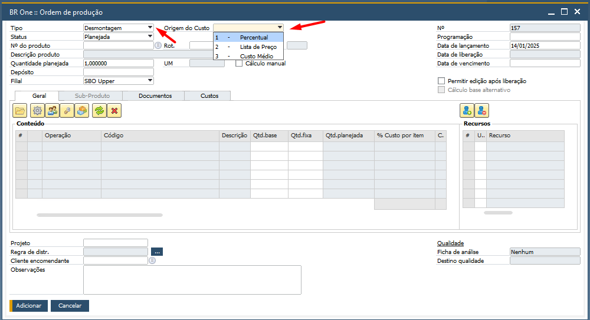
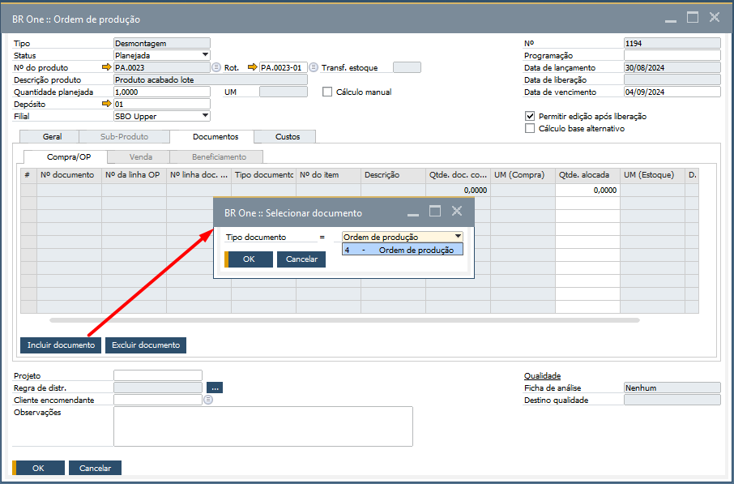
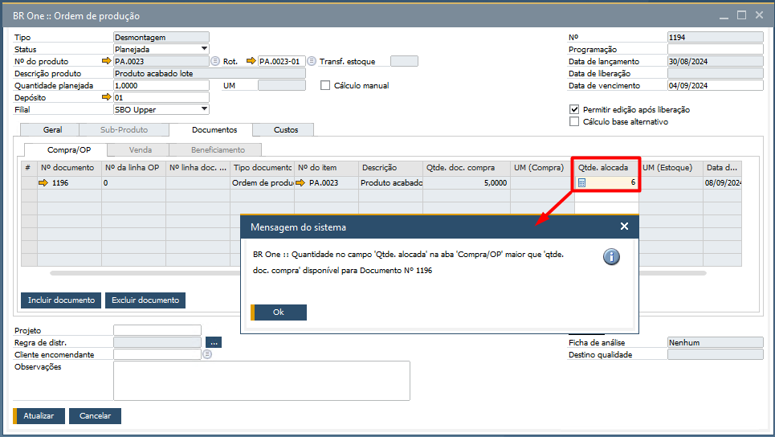
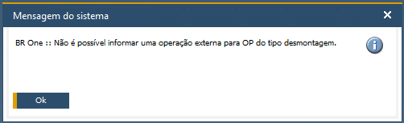
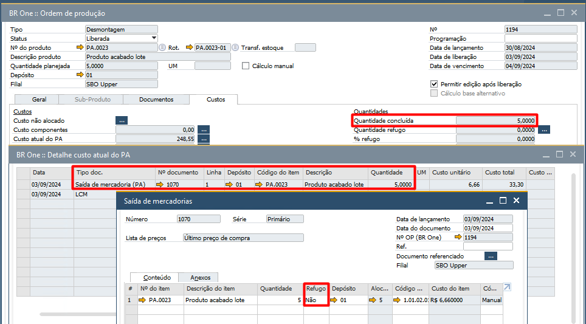
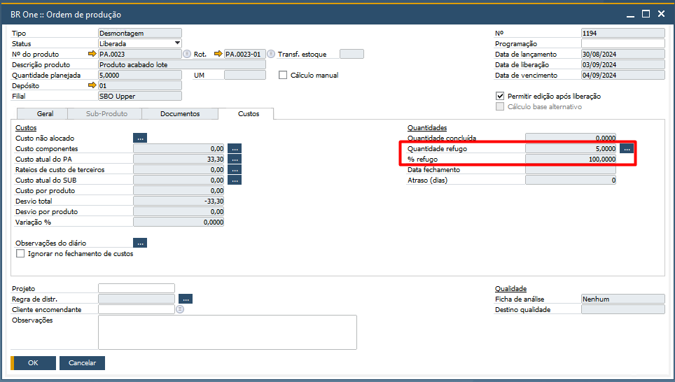
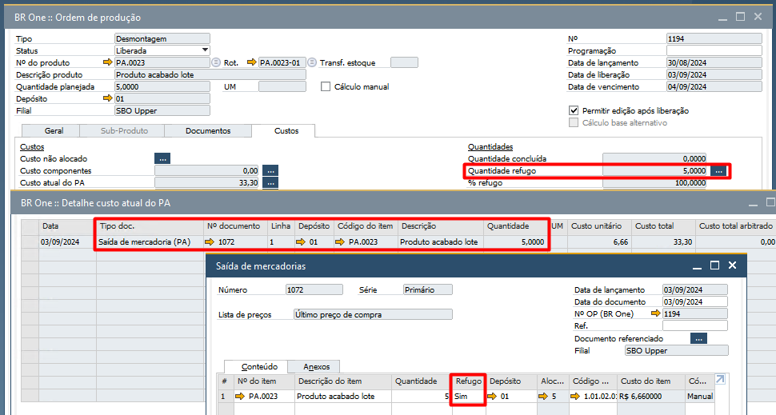
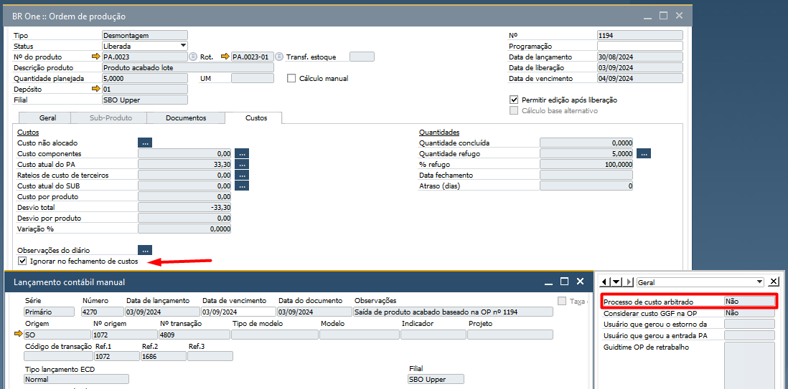

Ordem de Produção de Desmontagem
Na tela Ordem de Produção, selecionar a opção D – Desmontagem no campo Tipo.
{kind=link}
Após selecionar a opção “Desmontagem” um novo campo será exibido em tela denominado de “Origem do custo”. Nesse terá 3 opções:
Percentual;
Lista de preço;
Custo médio
Terá o seguinte comportamento, conforme opção escolhida:
Percentual
Quando esta opção for selecionada, um novo campo na grid da OP estará habilitado para edição, denominado “(%) custo por item”, onde o usuário poderá informar o percentual desejado. O valor do custo unitário de desmontagem será calculado automaticamente e exibido na coluna “Custo unit. desmontagem”, com base na seguinte fórmula:
A coluna “% Custo por Item” será desbloqueada para permitir a inserção de um valor, desde que a origem do custo da OP esteja definida como “Percentual”. Após informar o valor nessa coluna, os seguintes campos serão calculados automaticamente:
Custo Unitário de Desmontagem
Custo Total dos Componentes
Custo Total Planejado do PA
Fórmula de Cálculo
Os valores são calculados conforme a fórmula:
(Custo médio do PA * % custo por item)/ 100) / (Quantidade planejada da linha / quantidade planejada do PA)
Exemplo de Cenário
Custo Médio do PA: 267,08
% Custo por Item: 70
Quantidade Planejada da Linha: 22
Quantidade Planejada do PA: 10
Resultados Calculados:
Custo Unitário de Desmontagem: 84,98
Custo Total dos Componentes: 186,96
Custo Total Planejado do PA: 1869,58
Lista de Preço
Nesta opção, o sistema buscará o custo dos itens na lista de preço definida no parâmetro “Lista de preço para desmontagem” conforme configurado em Configuração de produção na aba OP. O comportamento é o seguinte:
Caso o item seja encontrado na lista, o custo será preenchido automaticamente. Se não houver lista configurada ou o item não for encontrado, o sistema preencherá o custo como R$ 0,00.
Custo Médio
Quando esta opção for selecionada, o custo médio do item será recuperado automaticamente com base no depósito definido na linha da OP.
Para OPs de Desmontagem as opções abaixo são bloqueadas:
Aba Sub-produto
Aba documentos (Venda e Beneficiamento)
Ficha de Análise
Destino Qualidade
Operação externa
É possível vincular um documento de Ordem de Produção (OP) na aba Documentos > Compras/OP para garantir a rastreabilidade do processo de desmontagem.
{kind=link}
Para que o documento seja vinculado, é necessário que haja a entrada de produto acabado na OP vinculada. Caso contrário, a seguinte mensagem será exibida:

BR One :: Não foi feita a entrada de mercadoria para a OP vinculada.
Se na linha do documento vinculado for informado um valor na Qtde. alocada maior do que a Qtde. doc. compra, a seguinte mensagem será exibida:
{kind=link}
Ao inserir uma Operação Externa (Processo de beneficiamento de compras) é exibido a seguinte mensagem:
{kind=link}
BR one :: Não é possível informar uma operação externa para OP do tipo desmontagem
É possível visualizar na aba Custos a quantidade concluída para a OP de desmontagem.
Importante que na tela Saída de mercadorias na aba Conteúdo, a coluna Refugo deve estar como Não para quantidades concluídas.
{kind=link}
Para apontamento de Saída de PA com refugo, a quantidade de componentes refugados deve aparecer no campo Quantidade refugo.
{kind=link}
Importante observar que o refugo deve estar constando na tela Detalhe quantidade refugo como Saída de mercadoria (PA) (refugo) e no documento Saída de mercadorias, a coluna refugo deve estar marcada com Sim.
{kind=link}
Ainda na aba Custo, ao selecionar a flag Ignorar no fechamento de custos, o campo de usuário Processo de custo arbitrado da tela do LCM será alterado para Não (N) no LCM do GGF Arbitrado gerado na OP de desmontagem.
{kind=link}